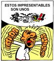

De: La Frikipedia, la enciclopedia extremadamente seria.
De: La Frikipedia, la enciclopedia extremadamente seria. De: La Frikipedia, la enciclopedia extremadamente seria.
| De la serie idiomas del mundo: | |||
| ! | |||
| |||
| Familia | todos los que no digan ? | ||
| Número de hablantes | todos los que sepan decir ! | ||
| Hablado en | Espiña e Italia | ||
| Hablado por | más gente de la que te puedas imaginar | ||
| Artificial o Natural | indefinido | ||
| Nivel de frikismo | ! | ||
| Dificultad | indefinido(ya sabemos todos que es todo indefinido!!) | ||
| Truqui para dominarlo | cabrearse | ||
| Máximo exponente | {{{maximo_exponente}}} | ||
| Ejemplo de uso | !!!!! !! !!!!! !!!(odio los canguros) | ||
!, Archienemigo del ?, se expande mayoritariamente por Espiña y Italia los putos brutos.
Originario de los negros de mierda aborígenes australianos, cuando un canguro le pisó el pie cuando éste dormia.
Sencillamente, no tiene fonética, solo lo puedes practicar cuando te cabreas, por ejemplo, como este tio: NOTA: Aunque no enga fonetica, mortadelo y filemón lo utilizan mucho en sus còmics.

Cuando llegaron los visigodos cristianos a Australia y oyeron a los aborigenes hablando su idioma(el idioma !) pensaron que los habia poseido el diablo, asi que hicieron una hoguera, pero uno de ellos tambien se quemó y vieron que gritaba por el dolor , otro de los suyos se quedo sin mano haciendo una casa y tambien le oyeron hablando el 'idioma' de los aborígenes.
Entonces se dieron cuenta de que ese idioma era tan sencillo como hacer cualquier gilipollez cosa que tuviese como consecuencia la dolencia de alguna parte del cuerpo u otro lugar, y se fue corriendo la voz por todo el mundo hasta nuestros dias.

|
Aborigen 1:!!! !! ! !!! ! |

|
Otro de los representantes de los !-hablantes:

«!!!!!!!!! ! !!!! !!! !! ! ! !!!! ! !!! ! !!!!! !!! !!! ! !!! ! !!!! !!!! !!! ! !!! gñapotrfhñ (se atraganto con un mosquito y murio) »
~ un aborigen dando un discurso
| Idiomas |
| -.-. --- -.. .. --. --- -- --- .-. ... . • A gugu tata • AAAAAAAAAAAAAAA • Deutsch • Andalúh • Argentino • Bable • Bengatio • Braile • Castellano antiguo • Castenciano • Català • Chimpancé • 漢語 • Cristiano • Croa Croa • Élfico • Engrish • Sédaseverne • Español • Esperanto • Euskera • Français • Galego-portugués • Gondwanés • Gñapés • HAVDITE • HOYGAN • Hxsøčolkφσ • Mésenller • English • Italiano • TlhIngan • Koruño • 1337 • Guau • Lingua latina • R.I.P. • Me me • Neolingua • Panocho • فارسی • Português • Pokémon • ROT13 • SMS • Sacatunn que pen • Spanglish • Toki pona • Tururu • Valencià • Vigués • Ελληνική γλώσσα • Русский • ←↕↕↓→↓↓↕↑↨↓ • 日本語 |
Autor(es):